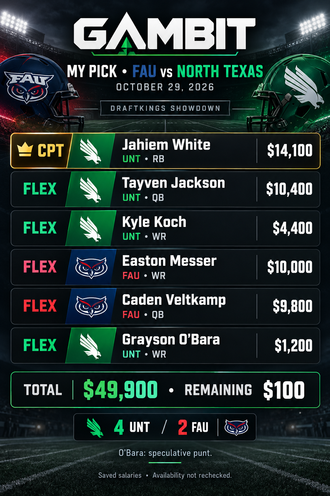

Open checks
- Analyst ranking is NOT_DONE.
- Third holdout is PENDING.
- Official rules evidence is UNVERIFIED. Cap and captain multiplier are assumptions.
Card Build
ChatGPT picks

Cursor picks
Choice #1 · Recommended
UNT -14 and a total near 78 point to a pace game where Jahiem White's workload and the UNT passing stack stay live in a 3-3 build.
| Slot | Player | Team | Pos | Salary | Proj | Value |
|---|---|---|---|---|---|---|
| Captain | Jahiem White | UNT | RB | $14,100 | 38.37 | 23.6 |
| FLEX | Tayven Jackson | UNT | QB | $10,400 | 30.43 | 16.0 |
| FLEX | Easton Messer | FAU | WR | $10,000 | 27.38 | 12.3 |
| FLEX | Justin Stevenson | UNT | WR | $7,800 | 26.56 | 14.1 |
| FLEX | Josiah Martin | UNT | WR | $3,000 | 7.04 | -0.1 |
| FLEX | Kyle Koch | UNT | WR | $4,400 | 13.82 | 5.7 |
Leftover: $300 (spent $49700 / $50,000). ETR total 162.785.
Choice #2
Both quarterbacks fit a shootout script if FAU keeps answering; the ETR both-QB shape keeps Messer and Veltkamp correlated with the UNT stars.
| Slot | Player | Team | Pos | Salary | Proj | Value |
|---|---|---|---|---|---|---|
| Captain | Jahiem White | UNT | RB | $14,100 | 38.37 | 23.6 |
| FLEX | Caden Veltkamp | FAU | QB | $9,800 | 24.70 | 11.0 |
| FLEX | Tayven Jackson | UNT | QB | $10,400 | 30.43 | 16.0 |
| FLEX | Justin Stevenson | UNT | WR | $7,800 | 26.56 | 14.1 |
| FLEX | Josiah Martin | UNT | WR | $3,000 | 7.04 | -0.1 |
| FLEX | Kyle Koch | UNT | WR | $4,400 | 13.82 | 5.7 |
Leftover: $500 (spent $49500 / $50,000). ETR total 160.105.
Choice #3
Captaining White still anchors the RB role while swapping to the second QB build trims salary and keeps four UNT pieces for a 4-2 leverage look.
| Slot | Player | Team | Pos | Salary | Proj | Value |
|---|---|---|---|---|---|---|
| Captain | Jahiem White | UNT | RB | $14,100 | 38.37 | 23.6 |
| FLEX | Tayven Jackson | UNT | QB | $10,400 | 30.43 | 16.0 |
| FLEX | Easton Messer | FAU | WR | $10,000 | 27.38 | 12.3 |
| FLEX | Justin Stevenson | UNT | WR | $7,800 | 26.56 | 14.1 |
| FLEX | Kyle Koch | UNT | WR | $4,400 | 13.82 | 5.7 |
| FLEX | Branden Hoch | FAU | WR | $3,200 | 5.92 | -1.3 |
Leftover: $100 (spent $49900 / $50,000). ETR total 161.665.
ETR VALUE
| Player | Team | Pos | Salary | Projected points | Sheet value | Owned | Slate |
|---|---|---|---|---|---|---|---|
| Jahiem White | UNT | RB | $8500 | 38.37 | 23.6 | 85.1% | Thursday |
| Tayven Jackson | UNT | QB | $8300 | 30.43 | 16.0 | 65.8% | Thursday |
| Justin Stevenson | UNT | WR | $7000 | 26.56 | 14.1 | 65.6% | Thursday |
| Easton Messer | FAU | WR | $8700 | 27.38 | 12.3 | 56.7% | Thursday |
| Caden Veltkamp | FAU | QB | $7800 | 24.70 | 11.0 | 52.9% | Thursday |
| Kelby Valsin | FAU | WR | $7500 | 21.81 | 8.6 | 48.6% | Thursday |
| Kyle Koch | UNT | WR | $4100 | 13.82 | 5.7 | 61.0% | Thursday |
| Dominique Henry | FAU | WR | $4900 | 11.45 | 2.1 | 26.5% | Thursday |
| Dominic De Freitas | UNT | K | $5200 | 10.86 | 1.1 | 0.0% | Thursday |
| Ethan Ervin | FAU | RB | $5200 | 10.50 | 0.7 | 16.6% | Thursday |
| Max Reese | UNT | WR | $4200 | 8.82 | 0.5 | 13.7% | Thursday |
| Brendon Haygood | UNT | RB | $4600 | 9.16 | 0.3 | 13.3% | Thursday |
| Baron Tipton | UNT | WR | $3800 | 7.72 | 0.0 | 9.7% | Thursday |
| Josiah Martin | UNT | WR | $3400 | 7.04 | -0.1 | 17.5% | Thursday |
| Leonard Farrow | FAU | RB | $5500 | 9.02 | -1.2 | 9.1% | Thursday |
| Branden Hoch | FAU | WR | $3500 | 5.92 | -1.3 | 2.2% | Thursday |
| Collin Rogers | FAU | K | $4800 | 7.50 | -1.7 | 0.0% | Thursday |
| Owen Pollock | FAU | WR | $3200 | 4.25 | -2.5 | 0.9% | Thursday |
| Brec Long | UNT | WR | $3100 | 2.99 | -3.7 | 0.3% | Thursday |
| Kaden Shields-Dutton | FAU | RB | $4200 | 4.35 | -4.0 | 0.1% | Thursday |
| Tucker Holloway | FAU | WR | $3400 | 2.39 | -4.7 | 0.0% | Thursday |
| TJ Chukwurah | UNT | WR | $3100 | 1.57 | -5.1 | 0.1% | Thursday |
| Connor Vaughn | UNT | WR | $3000 | 0.80 | -5.7 | 0.0% | Thursday |
| Nick Osho | UNT | RB | $4000 | 1.30 | -6.7 | 0.0% | Thursday |
| Brady Tillman III | FAU | RB | $4300 | 1.27 | -7.2 | 0.0% | Thursday |
Player book
Trending up
- Kelby Valsin · FAU · 40.6 last game (22.4 before)
- Tayven Jackson · UNT · 37.8 last game (24.1 before)
- Caden Veltkamp · FAU · 26.1 last game (21.2 before)
- Justin Stevenson · UNT · 36.2 last game (15.6 before)
- Max Reese · UNT · 12.9 last game (10.1 before)
- Baron Tipton · UNT · 18.3 last game (6.2 before)
- Brady Tillman III · FAU · 10.8 last game (2.1 before)
- AJ Johnson · FAU · 10.6 last game (4.9 before)
Week 0
North Texas
No box for this week.
Florida Atlantic
No box for this week.
Week 1
North Texas 16, Indiana 52
North Texas
North Texas threw for 215, 0 passing scores and ran for 152, 1 rushing scores.
Passing
| Player | Att | Yds | TD |
|---|---|---|---|
| Tayven Jackson | 28 | 192 | 0 |
| Chaston Ditta | 1 | 23 | 0 |
Rushing
| Player | Att | Yds | TD |
|---|---|---|---|
| Jahiem White | 14 | 61 | 1 |
| Brendon Haygood | 6 | 28 | 0 |
| Tayven Jackson | 6 | 22 | 0 |
| Josiah Martin | 2 | 15 | 0 |
| Nick Osho | 5 | 14 | 0 |
| Chris Jimerson Jr. | 4 | 11 | 0 |
| Chaston Ditta | 1 | 1 | 0 |
Receiving
| Player | Rec | Tgt | Yds | TD |
|---|---|---|---|---|
| Corri Milliner | 4 | 5 | 66 | 0 |
| Justin Stevenson | 2 | 2 | 47 | 0 |
| Jahiem White | 7 | 8 | 36 | 0 |
| Josiah Martin | 2 | 2 | 26 | 0 |
| TJ Chukwurah | 2 | 2 | 14 | 0 |
| Max Reese | 3 | 4 | 9 | 0 |
| Brendon Haygood | 1 | 1 | 3 | 0 |
Kickers
| Player | FG | XP |
|---|---|---|
| Dominic De Freitas | 3 | 1 |
Indiana
Indiana threw for 231, 4 passing scores and ran for 134, 3 rushing scores.
Passing
| Player | Att | Yds | TD |
|---|---|---|---|
| Josh Hoover | 16 | 231 | 4 |
Rushing
| Player | Att | Yds | TD |
|---|---|---|---|
| Turbo Richard | 15 | 58 | 2 |
| Grant Wilson | 1 | 43 | 1 |
| Lee Beebe | 14 | 33 | 0 |
Receiving
| Player | Rec | Tgt | Yds | TD |
|---|---|---|---|---|
| Charlie Becker | 4 | 6 | 64 | 2 |
| Davion Chandler | 1 | 1 | 42 | 1 |
| Turbo Richard | 1 | 1 | 38 | 0 |
| Tyler Morris | 3 | 3 | 35 | 0 |
| Brock Schott | 1 | 1 | 25 | 0 |
| Nick Marsh | 2 | 2 | 17 | 1 |
| Shazz Preston | 1 | 1 | 10 | 0 |
| Lee Beebe | — | 1 | — | — |
Kickers
| Player | FG | XP |
|---|---|---|
| Nicolas Radicic | 1 | 7 |
Florida Atlantic 21, Florida 66
Florida Atlantic
Florida Atlantic threw for 276, 1 passing scores and ran for 120, 2 rushing scores.
Passing
| Player | Att | Yds | TD |
|---|---|---|---|
| Caden Veltkamp | 52 | 276 | 1 |
| Easton Messer | 1 | 0 | 0 |
Rushing
| Player | Att | Yds | TD |
|---|---|---|---|
| Leonard Farrow | 10 | 51 | 0 |
| Ethan Ervin | 16 | 50 | 1 |
| Brady Tillman III | 2 | 10 | 0 |
| Kaden Shields-Dutton | 3 | 8 | 0 |
| Caden Veltkamp | 6 | 1 | 1 |
Receiving
| Player | Rec | Tgt | Yds | TD |
|---|---|---|---|---|
| Kelby Valsin | 10 | 15 | 92 | 1 |
| Easton Messer | 7 | 13 | 73 | 0 |
| Branden Hoch | 5 | 6 | 44 | 0 |
| Dominique Henry | 6 | 9 | 38 | 0 |
| Leonard Farrow | 2 | 2 | 14 | 0 |
| AJ Johnson | 2 | 2 | 6 | 0 |
| Kaden Shields-Dutton | 1 | — | 6 | 0 |
| Brady Tillman III | 1 | 2 | 3 | 0 |
Kickers
| Player | FG | XP |
|---|---|---|
| Collin Rogers | 0 | 3 |
Florida
Florida threw for 343, 4 passing scores and ran for 301, 5 rushing scores.
Passing
| Player | Att | Yds | TD |
|---|---|---|---|
| Aaron Philo | 21 | 275 | 3 |
| Tramell Jones Jr. | 5 | 68 | 1 |
Rushing
| Player | Att | Yds | TD |
|---|---|---|---|
| Jadan Baugh | 14 | 160 | 3 |
| Duke Clark | 8 | 65 | 1 |
| Aaron Philo | 6 | 20 | 1 |
| Byron Louis | 4 | 16 | 0 |
| Vernell Brown III | 1 | 14 | 0 |
| London Montgomery | 3 | 12 | 0 |
| Anthony Rubio | 2 | 11 | 0 |
| Tramell Jones Jr. | 2 | 3 | 0 |
Receiving
| Player | Rec | Tgt | Yds | TD |
|---|---|---|---|---|
| Vernell Brown III | 6 | 7 | 117 | 1 |
| TJ Abrams | 1 | 1 | 63 | 0 |
| Dallas Wilson | 3 | 5 | 47 | 0 |
| Byron Louis | 1 | 1 | 32 | 0 |
| Bailey Stockton | 3 | 3 | 20 | 1 |
| Luke Harpring | 1 | 1 | 19 | 0 |
| Micah Mays Jr. | 2 | 4 | 15 | 0 |
| Amir Jackson | 1 | 1 | 14 | 0 |
| Duke Clark | 1 | 1 | 10 | 1 |
| Micah Jones | 1 | 1 | 6 | 1 |
Kickers
| Player | FG | XP |
|---|---|---|
| Liam Padron | 0 | 1 |
| Patrick Durkin | 1 | 8 |
Week 2
North Texas 44, UNLV 6
North Texas
North Texas threw for 261, 2 passing scores and ran for 185, 3 rushing scores.
Passing
| Player | Att | Yds | TD |
|---|---|---|---|
| Tayven Jackson | 26 | 233 | 2 |
| Chaston Ditta | 2 | 28 | 0 |
| Chris Jimerson Jr. | 1 | 0 | 0 |
Rushing
| Player | Att | Yds | TD |
|---|---|---|---|
| Jahiem White | 12 | 124 | 1 |
| Brendon Haygood | 12 | 36 | 1 |
| Tayven Jackson | 7 | 15 | 1 |
| Josiah Martin | 1 | 6 | 0 |
| Chris Jimerson Jr. | 2 | 4 | 0 |
| Nick Osho | 2 | 1 | 0 |
| Chaston Ditta | 1 | -1 | 0 |
Receiving
| Player | Rec | Tgt | Yds | TD |
|---|---|---|---|---|
| Corri Milliner | 3 | 4 | 65 | 0 |
| Justin Stevenson | 2 | 4 | 43 | 0 |
| TJ Chukwurah | 2 | 3 | 41 | 0 |
| Jahiem White | 2 | 3 | 34 | 1 |
| Brec Long | 2 | 3 | 25 | 0 |
| Josiah Martin | 3 | 5 | 24 | 0 |
| Max Reese | 1 | 1 | 16 | 1 |
| Baron Tipton | 2 | 3 | 13 | 0 |
UNLV
UNLV threw for 203, 0 passing scores and ran for 98, 0 rushing scores.
Passing
| Player | Att | Yds | TD |
|---|---|---|---|
| Jackson Arnold | 27 | 194 | 0 |
| Alex Orji | 5 | 9 | 0 |
Rushing
| Player | Att | Yds | TD |
|---|---|---|---|
| Jai'Den Thomas | 10 | 37 | 0 |
| Alex Orji | 2 | 32 | 0 |
| Jaylon Glover | 6 | 24 | 0 |
| Darrien Jones | 4 | 12 | 0 |
| Kamran Williams | 1 | 2 | 0 |
| Kayden McGee | 2 | 2 | 0 |
| Jackson Arnold | 14 | -11 | 0 |
Receiving
| Player | Rec | Tgt | Yds | TD |
|---|---|---|---|---|
| Taz Reddicks | 5 | 5 | 75 | 0 |
| Taeshaun Lyons | 5 | 5 | 37 | 0 |
| Jaylon Glover | 2 | 2 | 22 | 0 |
| Vincent Carner | 2 | 4 | 22 | 0 |
| Jae Beasley II | 1 | 1 | 16 | 0 |
| Kayden McGee | 1 | 2 | 11 | 0 |
| Keyan Burnett | 2 | 3 | 11 | 0 |
| Darrien Jones | 1 | 2 | 9 | 0 |
| Jai'Den Thomas | — | 1 | — | — |
| Peyton Zachary | — | 1 | — | — |
Florida Atlantic 38, NAVY 30
Florida Atlantic
Florida Atlantic threw for 386, 5 passing scores and ran for 94, 0 rushing scores.
Passing
| Player | Att | Yds | TD |
|---|---|---|---|
| Caden Veltkamp | 32 | 386 | 5 |
| Drew Devillier | 1 | 0 | 0 |
Rushing
| Player | Att | Yds | TD |
|---|---|---|---|
| Ethan Ervin | 17 | 67 | 0 |
| Leonard Farrow | 8 | 34 | 0 |
| Brady Tillman III | 7 | 10 | 0 |
| Kaden Shields-Dutton | 4 | 5 | 0 |
| Caden Veltkamp | 5 | -22 | 0 |
Receiving
| Player | Rec | Tgt | Yds | TD |
|---|---|---|---|---|
| Easton Messer | 8 | 9 | 179 | 2 |
| Kelby Valsin | 8 | 9 | 115 | 1 |
| Dominique Henry | 6 | 6 | 63 | 1 |
| AJ Johnson | 2 | — | 11 | 1 |
| Kaden Shields-Dutton | 1 | — | 8 | 0 |
| Tucker Holloway | 1 | 1 | 5 | 0 |
| Damon Allen | — | 1 | — | — |
NAVY
NAVY threw for 147, 2 passing scores and ran for 246, 2 rushing scores.
Passing
| Player | Att | Yds | TD |
|---|---|---|---|
| Jackson Gutierrez | 12 | 100 | 2 |
| Braxton Woodson | 11 | 47 | 0 |
Rushing
| Player | Att | Yds | TD |
|---|---|---|---|
| Braxton Woodson | 12 | 96 | 1 |
| Jackson Gutierrez | 7 | 75 | 1 |
| Michael Barrow | 7 | 39 | 0 |
| Vic Listorti | 4 | 35 | 0 |
| Christian Cromer | 2 | 5 | 0 |
| Evan Blouir | 1 | 2 | 0 |
| Garrison Edwards | 1 | 0 | 0 |
| Isaiah Bryant | 3 | -6 | 0 |
Receiving
| Player | Rec | Tgt | Yds | TD |
|---|---|---|---|---|
| Jordan Collins | 2 | 3 | 68 | 1 |
| Charles Robinson | 4 | — | 36 | 1 |
| Luke Hutchison | 1 | 2 | 27 | 0 |
| Vic Listorti | 2 | 3 | 16 | 0 |
| Isaiah Bryant | — | 1 | — | — |
Week 3
North Texas 35, TXST 49
North Texas
North Texas threw for 492, 3 passing scores and ran for 113, 2 rushing scores.
Passing
| Player | Att | Yds | TD |
|---|---|---|---|
| Tayven Jackson | 56 | 492 | 3 |
Rushing
| Player | Att | Yds | TD |
|---|---|---|---|
| Brendon Haygood | 11 | 50 | 1 |
| Jahiem White | 15 | 45 | 1 |
| Tayven Jackson | 3 | 18 | 0 |
Receiving
| Player | Rec | Tgt | Yds | TD |
|---|---|---|---|---|
| Justin Stevenson | 10 | 11 | 122 | 0 |
| Corri Milliner | 7 | 9 | 80 | 1 |
| Josiah Martin | 4 | 6 | 73 | 0 |
| Baron Tipton | 5 | 6 | 58 | 0 |
| Kyle Koch | 4 | 5 | 58 | 1 |
| Jahiem White | 7 | 9 | 56 | 1 |
| Brec Long | 2 | 3 | 21 | 0 |
| Max Reese | 2 | 2 | 15 | 0 |
| TJ Chukwurah | 1 | 1 | 9 | 0 |
TXST
TXST threw for 268, 4 passing scores and ran for 337, 3 rushing scores.
Passing
| Player | Att | Yds | TD |
|---|---|---|---|
| Brad Jackson | 22 | 268 | 4 |
Rushing
| Player | Att | Yds | TD |
|---|---|---|---|
| Torrance Burgess Jr. | 25 | 214 | 0 |
| Davian Jackson | 10 | 77 | 3 |
| Brad Jackson | 9 | 30 | 0 |
| Jaylen Jenkins | 4 | 16 | 0 |
Receiving
| Player | Rec | Tgt | Yds | TD |
|---|---|---|---|---|
| Chris Dawn Jr. | 4 | 6 | 107 | 2 |
| Kylen Evans | 4 | 5 | 70 | 0 |
| Blake Smith | 1 | 1 | 41 | 1 |
| Ty Stamey | 1 | 1 | 18 | 0 |
| Davian Jackson | 1 | 3 | 13 | 1 |
| Zechariah Sample | 2 | 2 | 7 | 0 |
| Beau Sparks | 1 | 2 | 6 | 0 |
| Torrance Burgess Jr. | 2 | 2 | 6 | 0 |
Florida Atlantic 16, FIU 10
Florida Atlantic
Florida Atlantic threw for 204, 0 passing scores and ran for 56, 1 rushing scores.
Passing
| Player | Att | Yds | TD |
|---|---|---|---|
| Caden Veltkamp | 37 | 204 | 0 |
Rushing
| Player | Att | Yds | TD |
|---|---|---|---|
| Ethan Ervin | 13 | 36 | 0 |
| Leonard Farrow | 5 | 17 | 1 |
| Brady Tillman III | 4 | 14 | 0 |
| Kaden Shields-Dutton | 4 | 12 | 0 |
| Caden Veltkamp | 5 | -23 | 0 |
Receiving
| Player | Rec | Tgt | Yds | TD |
|---|---|---|---|---|
| Easton Messer | 8 | 11 | 85 | 0 |
| Kelby Valsin | 6 | 8 | 56 | 0 |
| Ethan Ervin | 4 | 4 | 16 | 0 |
| Dominique Henry | 2 | 5 | 12 | 0 |
| AJ Johnson | 2 | 3 | 10 | 0 |
| Leonard Farrow | 1 | 1 | 9 | 0 |
| Kaden Shields-Dutton | 1 | — | 8 | 0 |
| RJ Garcia II | 1 | 2 | 8 | 0 |
| Damon Allen | — | 1 | — | — |
FIU
FIU threw for 262, 0 passing scores and ran for 95, 1 rushing scores.
Passing
| Player | Att | Yds | TD |
|---|---|---|---|
| JJ Kohl | 43 | 262 | 0 |
Rushing
| Player | Att | Yds | TD |
|---|---|---|---|
| Anthony Carrie | 19 | 44 | 0 |
| James Resar | 1 | 17 | 0 |
| Devonte Lyons | 7 | 15 | 0 |
| JJ Kohl | 6 | 14 | 1 |
| Jojo Stone | 1 | 3 | 0 |
| Sterling Joseph | 1 | 2 | 0 |
Receiving
| Player | Rec | Tgt | Yds | TD |
|---|---|---|---|---|
| Maguire Anderson | 8 | 13 | 139 | 0 |
| Tyson Carter | 4 | 5 | 35 | 0 |
| Jojo Stone | 3 | 6 | 34 | 0 |
| Anthony Carrie | 2 | 2 | 21 | 0 |
| James Resar | 3 | 8 | 20 | 0 |
| Jackson Verdugo | 2 | 2 | 13 | 0 |
Week 4
North Texas 63, HCU 14
North Texas
North Texas threw for 400, 3 passing scores and ran for 254, 5 rushing scores.
Passing
| Player | Att | Yds | TD |
|---|---|---|---|
| Tayven Jackson | 18 | 270 | 1 |
| Chaston Ditta | 8 | 75 | 1 |
| Chris Jimerson Jr. | 2 | 55 | 1 |
Rushing
| Player | Att | Yds | TD |
|---|---|---|---|
| Jahiem White | 11 | 133 | 4 |
| Chris Jimerson Jr. | 4 | 41 | 0 |
| Nick Osho | 4 | 26 | 0 |
| Keenan Jackson Jr. | 7 | 25 | 0 |
| Adarion Nettles | 5 | 24 | 0 |
| Chaston Ditta | 3 | 5 | 1 |
Receiving
| Player | Rec | Tgt | Yds | TD |
|---|---|---|---|---|
| Max Reese | 3 | 3 | 70 | 0 |
| Justin Stevenson | 5 | 6 | 69 | 1 |
| Corri Milliner | 3 | 4 | 65 | 0 |
| Grayson O'Bara | 2 | — | 52 | 0 |
| Josiah Martin | 2 | 3 | 38 | 0 |
| Kyle Koch | 3 | 4 | 37 | 0 |
| TJ Chukwurah | 2 | 2 | 28 | 1 |
| Baron Tipton | 1 | 1 | 17 | 1 |
| Jahiem White | 3 | 3 | 17 | 0 |
| Adarion Nettles | 1 | 1 | 7 | 0 |
HCU
HCU threw for 148, 1 passing scores and ran for 90, 1 rushing scores.
Passing
| Player | Att | Yds | TD |
|---|---|---|---|
| Cutter Stewart | 15 | 123 | 1 |
| Maddox Kopp | 6 | 24 | 0 |
| Reilly Garcia | 5 | 1 | 0 |
Rushing
| Player | Att | Yds | TD |
|---|---|---|---|
| Maddox Kopp | 3 | 29 | 1 |
| Elijah Harris | 11 | 23 | 0 |
| Champ Dozier | 4 | 13 | 0 |
| Jaylen Middleton | 6 | 9 | 0 |
| Hayden Drinkard | 2 | 7 | 0 |
| Cutter Stewart | 8 | 6 | 0 |
| Reilly Garcia | 1 | 2 | 0 |
| Jamaal Hall II | 1 | 1 | 0 |
Receiving
| Player | Rec | Tgt | Yds | TD |
|---|---|---|---|---|
| Trayjen Llanas-Wilcox | 2 | — | 53 | 0 |
| Ja'Ryan Wallace | 2 | 3 | 25 | 0 |
| Champ Dozier | 2 | 3 | 20 | 0 |
| Jamaal Hall II | 1 | 3 | 17 | 0 |
| Elijah Harris | 3 | 3 | 12 | 0 |
| Jaylen Middleton | 2 | 2 | 8 | 0 |
| Terrell Bradshaw | 1 | 1 | 7 | 0 |
| Luka Matamoros | 1 | 2 | 4 | 0 |
| Jett Runion | 1 | 1 | 2 | 1 |
Florida Atlantic 45, ULM 17
Florida Atlantic
Florida Atlantic threw for 333, 2 passing scores and ran for 237, 3 rushing scores.
Passing
| Player | Att | Yds | TD |
|---|---|---|---|
| Caden Veltkamp | 38 | 314 | 2 |
| Drew Devillier | 4 | 19 | 0 |
Rushing
| Player | Att | Yds | TD |
|---|---|---|---|
| Ethan Ervin | 21 | 139 | 1 |
| Leonard Farrow | 14 | 64 | 1 |
| Brady Tillman III | 6 | 22 | 0 |
| AJ Johnson | 2 | 10 | 1 |
| Caden Veltkamp | 2 | 2 | 0 |
Receiving
| Player | Rec | Tgt | Yds | TD |
|---|---|---|---|---|
| Kelby Valsin | 9 | 11 | 123 | 0 |
| Dominique Henry | 8 | 10 | 116 | 2 |
| Tucker Holloway | 2 | 2 | 34 | 0 |
| Easton Messer | 5 | 6 | 20 | 0 |
| AJ Johnson | 2 | 4 | 16 | 0 |
| RJ Garcia II | 2 | — | 10 | 0 |
| Ethan Ervin | 1 | 1 | 7 | 0 |
| Brady Tillman III | 1 | 1 | 4 | 0 |
| Branden Hoch | 1 | — | 3 | 0 |
| Damon Allen | — | 3 | — | — |
ULM
ULM threw for 278, 2 passing scores and ran for 54, 0 rushing scores.
Passing
| Player | Att | Yds | TD |
|---|---|---|---|
| Aidan Armenta | 29 | 278 | 2 |
| Landon Graves | 1 | 0 | 0 |
Rushing
| Player | Att | Yds | TD |
|---|---|---|---|
| CJ Phillip | 6 | 26 | 0 |
| Marcellus Jackson | 2 | 15 | 0 |
| Zach Palmer-Smith | 6 | 14 | 0 |
| Derrick Jameson | 3 | 7 | 0 |
| Trevon Kinchen | 2 | 2 | 0 |
| Bryson Roland | 1 | 0 | 0 |
| Aidan Armenta | 5 | -10 | 0 |
Receiving
| Player | Rec | Tgt | Yds | TD |
|---|---|---|---|---|
| LT Robinson | 2 | 2 | 79 | 1 |
| JP Coulter | 3 | 5 | 61 | 0 |
| Nic Trujillo | 2 | 6 | 47 | 0 |
| Marcellus Jackson | 5 | 5 | 32 | 0 |
| Bryce Anderson | 5 | 6 | 28 | 0 |
| Parker Fulghum | 1 | 1 | 18 | 0 |
| Cade Callahan | 2 | 2 | 5 | 0 |
| Zach Palmer-Smith | 1 | — | 4 | 0 |
| Brandon Buckhaulter | 1 | 1 | 3 | 0 |
| Jase Hoath | 1 | 1 | 1 | 1 |
Week 5
North Texas
No box for this week.
Florida Atlantic 66, TXSO 10
Florida Atlantic
Florida Atlantic threw for 323, 4 passing scores and ran for 130, 2 rushing scores.
Passing
| Player | Att | Yds | TD |
|---|---|---|---|
| Caden Veltkamp | 16 | 247 | 4 |
| Drew Devillier | 7 | 54 | 0 |
| Jordan Magwood | 3 | 16 | 0 |
| Jeremiah Daoud | 4 | 6 | 0 |
Rushing
| Player | Att | Yds | TD |
|---|---|---|---|
| Brady Tillman III | 6 | 48 | 1 |
| Ethan Ervin | 4 | 23 | 0 |
| Almari Brown | 5 | 21 | 1 |
| Jeremiah Daoud | 1 | 16 | 0 |
| Leonard Farrow | 2 | 13 | 0 |
| Jordan Magwood | 1 | 3 | 0 |
| Joshua Harriott | 1 | 3 | 0 |
| Caden Veltkamp | 2 | 2 | 0 |
| Drew Devillier | 1 | 1 | 0 |
Receiving
| Player | Rec | Tgt | Yds | TD |
|---|---|---|---|---|
| Kelby Valsin | 7 | — | 126 | 3 |
| Easton Messer | 4 | 5 | 88 | 1 |
| Dominique Henry | 2 | 4 | 33 | 0 |
| Tucker Holloway | 1 | 1 | 26 | 0 |
| RJ Garcia II | 1 | 3 | 19 | 0 |
| Branden Hoch | 1 | 4 | 16 | 0 |
| Antojuan Woody | 2 | 2 | 9 | 0 |
| Peter Cannon | 1 | 1 | 6 | 0 |
TXSO
TXSO threw for 158, 0 passing scores and ran for 155, 1 rushing scores.
Passing
| Player | Att | Yds | TD |
|---|---|---|---|
| Cam'Ron McCoy | 27 | 158 | 0 |
| Nelson Peterson Jr. | 1 | 0 | 0 |
Rushing
| Player | Att | Yds | TD |
|---|---|---|---|
| Athean Renfro Jr. | 20 | 101 | 1 |
| Fatu Mukuba | 1 | 16 | 0 |
| David Kency | 7 | 14 | 0 |
| Jacob Washington | 5 | 13 | 0 |
| Nelson Peterson Jr. | 1 | 6 | 0 |
| Cam'Ron McCoy | 8 | 5 | 0 |
| Roriyon Richardson | 1 | 0 | 0 |
Receiving
| Player | Rec | Tgt | Yds | TD |
|---|---|---|---|---|
| Roriyon Richardson | 6 | 7 | 61 | 0 |
| Zyion Claville | 3 | 3 | 32 | 0 |
| Fatu Mukuba | 4 | 5 | 23 | 0 |
| Daveon Walker | 2 | 5 | 22 | 0 |
| Athean Renfro Jr. | 1 | 1 | 19 | 0 |
| Xavier Phipps | 1 | 2 | 1 | 0 |
Week 6
North Texas 50, CLT 10
North Texas
North Texas threw for 382, 5 passing scores and ran for 198, 1 rushing scores.
Passing
| Player | Att | Yds | TD |
|---|---|---|---|
| Tayven Jackson | 31 | 349 | 5 |
| Chaston Ditta | 8 | 33 | 0 |
Rushing
| Player | Att | Yds | TD |
|---|---|---|---|
| Jahiem White | 12 | 105 | 1 |
| Brendon Haygood | 7 | 35 | 0 |
| Chris Jimerson Jr. | 4 | 34 | 0 |
| Colin Page | 3 | 8 | 0 |
| Josiah Martin | 2 | 8 | 0 |
| Tayven Jackson | 1 | 8 | 0 |
| Chaston Ditta | 2 | 0 | 0 |
Receiving
| Player | Rec | Tgt | Yds | TD |
|---|---|---|---|---|
| Justin Stevenson | 9 | 12 | 122 | 2 |
| Baron Tipton | 3 | 5 | 93 | 1 |
| Kyle Koch | 4 | 6 | 55 | 1 |
| Max Reese | 3 | — | 39 | 1 |
| Jahiem White | 2 | 2 | 37 | 0 |
| Josiah Martin | 4 | 4 | 21 | 0 |
| TJ Chukwurah | 1 | 2 | 9 | 0 |
| Dalton Carnes | 1 | 2 | 6 | 0 |
| Brec Long | 1 | 2 | 0 | 0 |
CLT
CLT threw for 218, 1 passing scores and ran for 56, 0 rushing scores.
Passing
| Player | Att | Yds | TD |
|---|---|---|---|
| Conner Harrell | 22 | 218 | 1 |
| Jaylen White | 1 | 0 | 0 |
Rushing
| Player | Att | Yds | TD |
|---|---|---|---|
| Henry Rutledge | 12 | 38 | 0 |
| D'Mariun Perteet | 8 | 21 | 0 |
| Khamani Alexander | 2 | 15 | 0 |
| Jariel Cobb | 1 | -2 | 0 |
| Jaylen White | 4 | -3 | 0 |
| Conner Harrell | 5 | -5 | 0 |
| Ian Kelly | 1 | -8 | 0 |
Receiving
| Player | Rec | Tgt | Yds | TD |
|---|---|---|---|---|
| Jaden Barnes | 9 | 10 | 94 | 0 |
| Derrick Eley | 2 | 2 | 79 | 1 |
| Brody Dawyot | 3 | 4 | 28 | 0 |
| Tank Boston | 1 | 3 | 17 | 0 |
| D'Mariun Perteet | — | 1 | — | — |
Florida Atlantic
No box for this week.
Week 7
North Texas
No box for this week.
Florida Atlantic 24, ARMY 56
Florida Atlantic
Florida Atlantic threw for 324, 3 passing scores and ran for 109, 0 rushing scores.
Passing
| Player | Att | Yds | TD |
|---|---|---|---|
| Caden Veltkamp | 48 | 318 | 3 |
| Drew Devillier | 1 | 6 | 0 |
Rushing
| Player | Att | Yds | TD |
|---|---|---|---|
| Ethan Ervin | 10 | 46 | 0 |
| Leonard Farrow | 6 | 41 | 0 |
| Kaden Shields-Dutton | 4 | 20 | 0 |
| Brady Tillman III | 4 | 19 | 0 |
| Caden Veltkamp | 3 | -17 | 0 |
Receiving
| Player | Rec | Tgt | Yds | TD |
|---|---|---|---|---|
| Easton Messer | 14 | 17 | 102 | 1 |
| Kelby Valsin | 7 | 10 | 89 | 1 |
| Dominique Henry | 4 | 4 | 57 | 0 |
| Tucker Holloway | 3 | 3 | 38 | 1 |
| Branden Hoch | 2 | 6 | 17 | 0 |
| Ethan Ervin | 1 | 1 | 10 | 0 |
| Antojuan Woody | 1 | 2 | 6 | 0 |
| Kaden Shields-Dutton | 1 | — | 4 | 0 |
| Leonard Farrow | 1 | 1 | 1 | 0 |
ARMY
ARMY threw for 2, 0 passing scores and ran for 479, 8 rushing scores.
Passing
| Player | Att | Yds | TD |
|---|---|---|---|
| Cale Hellums | 2 | 2 | 0 |
Rushing
| Player | Att | Yds | TD |
|---|---|---|---|
| Cale Hellums | 25 | 195 | 5 |
| Jake Rendina | 7 | 86 | 1 |
| Bryson Luter | 3 | 78 | 1 |
| Godspower Nwawuihe | 11 | 56 | 0 |
| Samari Howard | 5 | 43 | 1 |
| Carson Smith | 6 | 16 | 0 |
| Demani Stewart | 2 | 6 | 0 |
| Stroman Bridges | 1 | -1 | 0 |
Receiving
| Player | Rec | Tgt | Yds | TD |
|---|---|---|---|---|
| Samari Howard | 1 | 1 | 2 | 0 |
Week 8
North Texas vs NAVY
North Texas
North Texas threw for 305, 3 passing scores and ran for 176, 2 rushing scores.
Passing
| Player | Att | Yds | TD |
|---|---|---|---|
| Tayven Jackson | 23 | 305 | 3 |
Rushing
| Player | Att | Yds | TD |
|---|---|---|---|
| Jahiem White | 20 | 174 | 2 |
| Brendon Haygood | 4 | 15 | 0 |
| Josiah Martin | 1 | -5 | 0 |
| Tayven Jackson | 2 | -8 | 0 |
Receiving
| Player | Rec | Tgt | Yds | TD |
|---|---|---|---|---|
| Justin Stevenson | 8 | 8 | 209 | 2 |
| Jahiem White | 4 | 5 | 58 | 0 |
| Kyle Koch | 4 | 6 | 28 | 1 |
| Baron Tipton | 1 | 2 | 10 | 0 |
NAVY
NAVY threw for 143, 1 passing scores and ran for 371, 4 rushing scores.
Passing
| Player | Att | Yds | TD |
|---|---|---|---|
| Jackson Gutierrez | 10 | 133 | 1 |
| Braxton Woodson | 2 | 10 | 0 |
Rushing
| Player | Att | Yds | TD |
|---|---|---|---|
| Jackson Gutierrez | 26 | 228 | 3 |
| Michael Barrow | 21 | 92 | 1 |
| Charles Robinson | 4 | 34 | 0 |
| Braxton Woodson | 6 | 12 | 0 |
| Vic Listorti | 3 | 10 | 0 |
| Jadyn Jones | 1 | 3 | 0 |
| Stefan Egbe | 1 | 2 | 0 |
| Luke Hutchison | 1 | -10 | 0 |
Receiving
| Player | Rec | Tgt | Yds | TD |
|---|---|---|---|---|
| Merrick Barlow | 2 | 3 | 64 | 0 |
| Charles Robinson | 3 | 4 | 32 | 0 |
| Jordan Collins | 1 | 2 | 23 | 0 |
| Michael Barrow | 1 | 1 | 15 | 1 |
| Truman Brasfield | 1 | 2 | 9 | 0 |
Florida Atlantic vs RICE
Florida Atlantic
Florida Atlantic threw for 339, 3 passing scores and ran for 125, 3 rushing scores.
Passing
| Player | Att | Yds | TD |
|---|---|---|---|
| Caden Veltkamp | 37 | 339 | 3 |
Rushing
| Player | Att | Yds | TD |
|---|---|---|---|
| Leonard Farrow | 17 | 86 | 0 |
| Easton Messer | 3 | 18 | 2 |
| Kaden Shields-Dutton | 3 | 14 | 0 |
| Ethan Ervin | 6 | 7 | 0 |
| Caden Veltkamp | 11 | 5 | 1 |
| Jordan Magwood | 1 | 1 | 0 |
| Dominique Henry | 1 | -6 | 0 |
Receiving
| Player | Rec | Tgt | Yds | TD |
|---|---|---|---|---|
| Easton Messer | 12 | 14 | 162 | 2 |
| Kelby Valsin | 7 | 8 | 78 | 0 |
| Branden Hoch | 2 | 3 | 38 | 1 |
| Leonard Farrow | 4 | 4 | 28 | 0 |
| Owen Pollock | 2 | 2 | 14 | 0 |
| Ethan Ervin | 1 | 1 | 10 | 0 |
| Tucker Holloway | 1 | 1 | 9 | 0 |
| Dominique Henry | — | 1 | — | — |
RICE
RICE threw for 109, 1 passing scores and ran for 499, 6 rushing scores.
Passing
| Player | Att | Yds | TD |
|---|---|---|---|
| Gael Ochoa | 5 | 80 | 1 |
| Patrick Crayton Jr. | 2 | 29 | 0 |
Rushing
| Player | Att | Yds | TD |
|---|---|---|---|
| Gael Ochoa | 12 | 259 | 4 |
| Tyvonn Byars | 16 | 93 | 0 |
| Max Mosey | 7 | 84 | 1 |
| Patrick Crayton Jr. | 3 | 39 | 0 |
| D'Andre Hardeman Jr. | 10 | 19 | 1 |
| Jordan Clark | 1 | 5 | 0 |
| Davis Lane | 2 | 0 | 0 |
Receiving
| Player | Rec | Tgt | Yds | TD |
|---|---|---|---|---|
| Braylen Walker | 1 | 1 | 71 | 1 |
| Jordan Clark | 2 | 2 | 34 | 0 |
| Max Mosey | 1 | 2 | 4 | 0 |
| D'Andre Hardeman Jr. | — | 1 | — | — |
Season totals
North Texas · 7 games
North Texas
North Texas threw for 2055, 16 passing scores and ran for 1078, 14 rushing scores.
Passing
| Player | Att | Yds | TD |
|---|---|---|---|
| Tayven Jackson | 182 | 1841 | 14 |
| Chaston Ditta | 19 | 159 | 1 |
| Chris Jimerson Jr. | 3 | 55 | 1 |
Rushing
| Player | Att | Yds | TD |
|---|---|---|---|
| Jahiem White | 84 | 642 | 10 |
| Brendon Haygood | 40 | 164 | 2 |
| Chris Jimerson Jr. | 14 | 90 | 0 |
| Tayven Jackson | 19 | 55 | 1 |
| Nick Osho | 11 | 41 | 0 |
| Keenan Jackson Jr. | 7 | 25 | 0 |
| Adarion Nettles | 5 | 24 | 0 |
| Josiah Martin | 6 | 24 | 0 |
| Colin Page | 3 | 8 | 0 |
| Chaston Ditta | 7 | 5 | 1 |
Receiving
| Player | Rec | Tgt | Yds | TD |
|---|---|---|---|---|
| Justin Stevenson | 36 | 43 | 612 | 5 |
| Corri Milliner | 17 | 22 | 276 | 1 |
| Jahiem White | 25 | 30 | 238 | 2 |
| Baron Tipton | 12 | 17 | 191 | 2 |
| Josiah Martin | 15 | 20 | 182 | 0 |
| Kyle Koch | 15 | 21 | 178 | 3 |
| Max Reese | 12 | — | 149 | 2 |
| TJ Chukwurah | 8 | 10 | 101 | 1 |
| Grayson O'Bara | 2 | — | 52 | 0 |
| Brec Long | 5 | 8 | 46 | 0 |
| Adarion Nettles | 1 | 1 | 7 | 0 |
| Dalton Carnes | 1 | 2 | 6 | 0 |
| Brendon Haygood | 1 | 1 | 3 | 0 |
Kickers
| Player | FG | XP |
|---|---|---|
| Dominic De Freitas | 3 | 1 |
Florida Atlantic · 7 games
Florida Atlantic
Florida Atlantic threw for 2185, 18 passing scores and ran for 871, 11 rushing scores.
Passing
| Player | Att | Yds | TD |
|---|---|---|---|
| Caden Veltkamp | 260 | 2084 | 18 |
| Drew Devillier | 13 | 79 | 0 |
| Jordan Magwood | 3 | 16 | 0 |
| Jeremiah Daoud | 4 | 6 | 0 |
| Easton Messer | 1 | 0 | 0 |
Rushing
| Player | Att | Yds | TD |
|---|---|---|---|
| Ethan Ervin | 87 | 368 | 2 |
| Leonard Farrow | 62 | 306 | 2 |
| Brady Tillman III | 29 | 123 | 1 |
| Kaden Shields-Dutton | 18 | 59 | 0 |
| Almari Brown | 5 | 21 | 1 |
| Easton Messer | 3 | 18 | 2 |
| Jeremiah Daoud | 1 | 16 | 0 |
| AJ Johnson | 2 | 10 | 1 |
| Jordan Magwood | 2 | 4 | 0 |
| Joshua Harriott | 1 | 3 | 0 |
| Drew Devillier | 1 | 1 | 0 |
| Dominique Henry | 1 | -6 | 0 |
| Caden Veltkamp | 34 | -52 | 2 |
Receiving
| Player | Rec | Tgt | Yds | TD |
|---|---|---|---|---|
| Easton Messer | 58 | 75 | 709 | 6 |
| Kelby Valsin | 54 | — | 679 | 6 |
| Dominique Henry | 28 | 39 | 319 | 3 |
| Branden Hoch | 11 | — | 118 | 1 |
| Tucker Holloway | 8 | 8 | 112 | 1 |
| Leonard Farrow | 8 | 8 | 52 | 0 |
| AJ Johnson | 8 | — | 43 | 1 |
| Ethan Ervin | 7 | 7 | 43 | 0 |
| RJ Garcia II | 4 | — | 37 | 0 |
| Kaden Shields-Dutton | 4 | — | 26 | 0 |
| Antojuan Woody | 3 | 4 | 15 | 0 |
| Owen Pollock | 2 | 2 | 14 | 0 |
| Brady Tillman III | 2 | 3 | 7 | 0 |
| Peter Cannon | 1 | 1 | 6 | 0 |
| Damon Allen | — | 5 | — | — |
Kickers
| Player | FG | XP |
|---|---|---|
| Collin Rogers | 0 | 3 |
Game report
Florida Atlantic offense
Florida Atlantic defense
North Texas offense
North Texas defense
How to attack them
Florida Atlantic does not have a clear soft side. The pass defense allows 8.3 yards per pass, 128th — near the bottom of the country. The run defense allows 6.2 yards per carry, 137th — near the bottom of the country.
Attack North Texas through the air. They allow 8.1 yards per pass, 119th — near the bottom of the country. The run defense allows 4.1 yards per carry, 75th — middle of the pack.